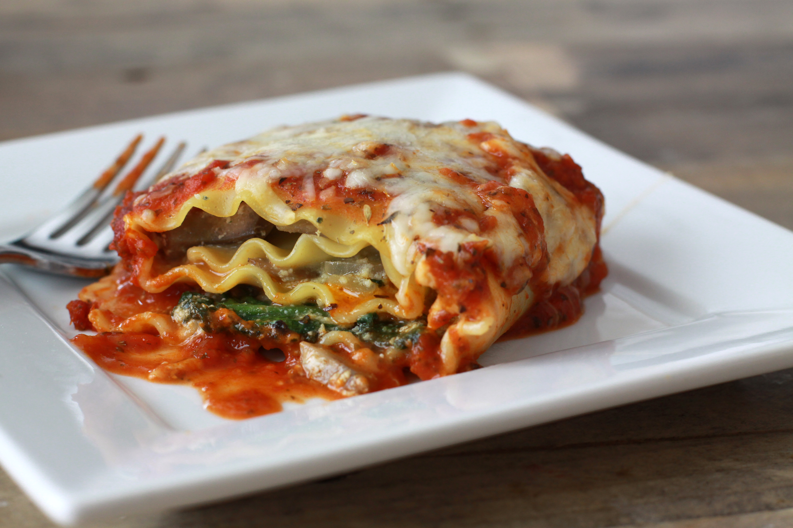

Lasagna Recipe

Description
lasagna is a type of pasta, possibly one of the oldest types, made of very wide, flat sheets.
Either term can also refer to an Italian dish made of stacked layers of lasagna alternating with fillings such as ragù (ground meats and tomato sauce), vegetables, cheeses (which may include ricotta, mozzarella, and parmesan), and seasonings and spices.
Ingredients
- 9 lasagna noodles
- 1 tablespoon olive oil
- 1 pound ground beef
- 1 pound bulk Italian sausage
- 1 teaspoon garlic salt
Steps
- reheat oven to 350 degrees F (175 degrees C).
- Bring a large pot of lightly salted water to a boil. Add the lasagna noodles and olive oil; cook until al dente, 8 to 10 minutes; drain.
- Cook the ground beef and sausage in a large pot over medium heat; drain. Stir in the mushrooms, garlic salt, oregano, thyme, basil, and tomato sauce.
Season with salt and pepper; simmer 30 minutes.
- Meanwhile, mix together the ricotta cheese, eggs, and Parmesan cheese in a bowl.
- Ladle enough of the meat sauce into a 9x13 inch baking dish to cover the bottom in a thin layer. Form a layer atop the sauce with 3 of the lasagna noodles.
Spread about 1/4 of the ricotta cheese mixture over the noodles. Sprinkle about 1/3 of the mozzarella cheese over the ricotta cheese mixture and then ladle about 1/3 of the meat sauce over the mozzarella cheese.
Repeat layering twice more, topping with the remaining 1/4 pound of mozzarella cheese.
- Bake in preheated oven 90 minutes. Allow to sit 10 to 15 minutes before serving.